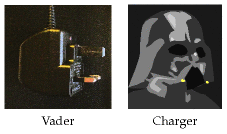
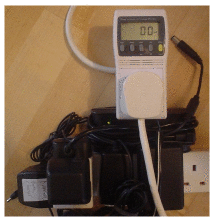
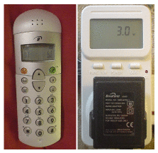
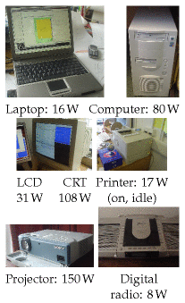
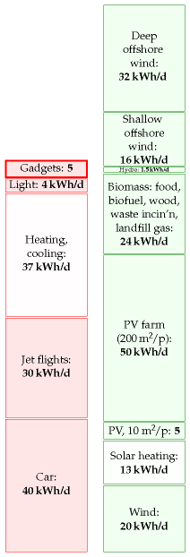
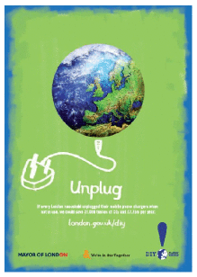
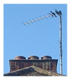

11 Gadgets

Figure 11.1. Planet destroyers. Spot the difference.

Figure 11.2. These five chargers – three for mobile phones, one for a pocket PC, and one for a laptop – registered less than one watt on my power meter.
One of the greatest dangers to society is the phone charger. The BBC News has been warning us of this since 2005: 1
“The nuclear power stations will all be switched off in a few years. How can we keep Britain’s lights on? … unplug your mobile-phone charger when it’s not in use.”
Sadly, a year later, Britain hadn’t got the message, and the BBC was forced to report:
“Britain tops energy waste league”.
And how did this come about? The BBC rams the message home:
“65% of UK consumers leave chargers on.”
From the way reporters talk about these planet-destroying black objects, it’s clear that they are roughly as evil as Darth Vader. But how evil, exactly?
In this chapter we’ll find out the truth about chargers. We’ll also investigate their cousins in the gadget parade: computers, phones, and TVs. Digital set-top boxes. Cable modems. In this chapter we’ll estimate the power used in running them and charging them, but not in manufacturing the toys in the first place – we’ll address that in the later chapter on “stuff.”
The truth about chargers
Modern phone chargers, when left plugged in with no phone attached, use about half a watt. 2 In our preferred units, this is a power consumption of about 0.01 kWh per day. For anyone whose consumption stack is over 100 kWh per day, the BBC’s advice, always unplug the phone charger, could potentially reduce their energy consumption by one hundredth of one percent (if only they would do it).
Every little helps!
I don’t think so. Obsessively switching off the phone-charger is like bailing the Titanic with a teaspoon. Do switch it off, but please be aware how tiny a gesture it is. Let me put it this way:
All the energy saved in switching off your charger for one day is used up in one second of car-driving.
The energy saved in switching off the charger for one year is equal to the energy in a single hot bath.
Admittedly, some older chargers use more than half a watt – if it’s warm to the touch, it’s probably using one watt or even three (figure 11.3). A three-watt-guzzling charger uses 0.07 kWh per day. I think that it’s a good idea to switch off such a charger – it will save you three pounds per year. But don’t kid yourself that you’ve “done your bit” by so doing. 3W is only a tiny fraction of total energy consumption.
OK, that’s enough bailing the Titanic with a teaspoon. Let’s find out where the electricity is really being used.

Figure 11.3. This wasteful cordless phone and its charger use 3 W when left plugged in. That’s 0.07 kWh/d. If electricity costs 10p per kWh then a 3 W trickle costs £3 per year.

Gadgets that really suck
Table 11.4 shows the power consumptions, in watts, of a houseful of gadgets. The first column shows the power consumption when the device is actually being used – for example, when a sound system is actually playing sound. The second column shows the consumption when the device is switched on, but sitting doing nothing. I was particularly shocked to find that a laser-printer sitting idle consumes 17 W – the same as the average consumption of a fridge-freezer! The third column shows the consumption when the gadget is explicitly asked to go to sleep or standby. The fourth shows the consumption when it is completely switched off – but still left plugged in to the mains. I’m showing all these powers in watts – to convert back to our standard units, remember that 40 W is 1 kWh/d. A nice rule of thumb, by the way, is that each watt costs about one pound per year (assuming electricity costs 10p per kWh).
The biggest guzzlers are the computer, its screen, and the television, whose consumption is in the hundreds of watts, when on. Entertainment systems such as stereos and DVD players swarm in the computer’s wake, many of them consuming 10 W or so. A DVD player may cost just £20 in the shop, but if you leave it switched on all the time, it’s costing you another £10 per year. Some stereos and computer peripherals consume several watts even when switched off, thanks to their mains-transformers. To be sure that a gadget is truly off, you need to switch it off at the wall.
Other gadgets
A vacuum cleaner, if you use it for a couple of hours per week, is equivalent to about 0.2 kWh/d. Mowing the lawn uses about 0.6 kWh. We could go on, but I suspect that computers and entertainment systems are the big suckers on most people’s electrical balance-sheet.

Figure 11.5. Information systems and other gadgets.
This chapter’s summary figure: it’ll depend how many gadgets you have at home and work, but a healthy houseful or officeful of gadgets left on all the time could easily use 5 kWh/d.
Mythconceptions
“There is no point in my switching off lights, TVs, and phone chargers during the winter. The ‘wasted’ energy they put out heats my home, so it’s not wasted.”
This myth is True for a few people, but only during the winter; but False for most.
If your house is being heated by electricity through ordinary bar fires or blower heaters then, yes, it’s much the same as heating the house with any electricity-wasting appliances. But if you are in this situation, you should change the way you heat your house. Electricity is high-grade energy, and heat is low-grade energy. It’s a waste to turn electricity into heat. To be precise, if you make only one unit of heat from a unit of electricity, that’s a waste. Heaters called air-source heat pumps or ground-source heat pumps can do much better, delivering 3 or 4 units of heat for every unit of electricity consumed. They work like back-to-front refrigerators, pumping heat into your house from the outside air (see Chapter 21).
For the rest, whose homes are heated by fossil fuels or biofuels, it’s a good idea to avoid using electrical gadgets as a heat source for your home – at least for as long as our increases in electricity-demand are served from fossil fuels. It’s better to burn the fossil fuel at home. The point is, if you use electricity from an ordinary fossil power station, more than half of the energy from the fossil fuel goes sadly up the cooling tower. Of the energy that gets turned into electricity, about 8% is lost in the transmission system. If you burn the fossil fuel in your home, more of the energy goes directly into making hot air for you.
Notes and further reading

Figure 11.6. Advertisement from the “DIY planet repairs” campaign. The text reads “Unplug. If every London household unplugged their mobile-phone chargers when not in use, we could save 31,000 tonnes of CO2 and £7.75m per year.” london.gov.uk/diy/

Further reading: Kuehr (2003).
The BBC News has been warning us … unplug your mobile-phone charger. The BBC News article from 2005 said: “the nuclear power stations will all be switched off in a few years. How can we keep Britain’s lights on? Here’s three ways you can save energy: switch off video recorders when they’re not in use; don’t leave televisions on standby; and unplug your mobile-phone charger when it’s not in use.”↩︎
Modern phone chargers, when left plugged in with no phone attached, use about half a watt. The Maplin power meter in figure 11.2 is not accurate enough to measure this sort of power. I am grateful to Sven Weier and Richard McMahon of Cambridge University Engineering Department who measured a standard Nokia charger in an accurate calorimeter; they found that, when not connected to the mobile, it wastes 0.472 W. They made additional interesting measurements: the charger, when connected to a fully-charged mobile phone, wastes 0.845 W; and when the charger is doing what it’s meant to do, charging a partly-charged Nokia mobile, it wastes 4.146 W as heat. Pedants sometimes ask “what about the reactive power of the charger?” This is a technical niggle, not really worth our time. For the record, I measured the reactive power (with a crummy meter) and found it to be about 2 VA per charger. Given that the power loss in the national grid is 8% of the delivered power, I reckon that the power loss associated with the reactive power is at most 0.16 W. When actually making a phone-call, the mobile uses 1 W.↩︎